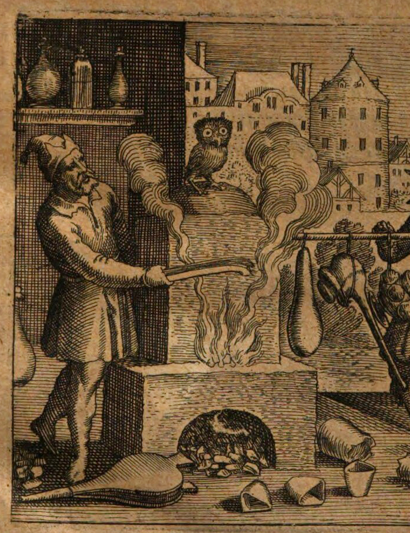

Matthäus Merian d.Ä., Titelblatt (Detail) für Michael Maier, Examen fucorum pseudo-chymicorum detectorum et in gratier veritatis mantium succicte refutatorum, Frankfurt: Johann Theodor de Bry 1617, UB Frankfurt, Sign. 8° P 192.5052, hier gezeigt Exemplar BSB München, Sign. Res/4 P.o.lat. 748,35
Bereits vor seiner Tätigkeit als anerkannter Verleger mit enzyklopädischem Repertoire schuf der junge Merian Bilder, die in das kulturelle Bildgedächtnis der Menschheit eingegangen sind. Mit dem Datum seiner Anstellung bei dem Verleger Johann Theodor de Bry erarbeitete sich Merian ab 1617 die Position als der Ikonograph der Alchemie. Bis heute fehlen die markanten Bilderfindungen in keinem Handbuch zur Alchemie, Hermetik und Naturmagie der Frühen Neuzeit.1 Zugleich wurde Merian von Oppenheim aus für den Frankfurter Verleger Lucas Jennis d.J. tätig, der in enger Verbindung zu De Bry eine Reihe der wichtigsten Alchemica illustrata des 17. Jahrhunderts auf den Weg brachte. Die Kupferdruckereien dieser Verlage bildeten für eine kurze Zeit das europäische Produktionszentrum für die Bebilderung der Alchemie. Begünstigt durch die enge Verbindung De Brys und Lucas Jennis’ mit den der Alchemie zugwandten Höfen in Heidelberg, Kassel und Butzbach2 sowie aufgrund der europäischen Vernetzung mit bibliophilen Liebhabern und bekannten Fachautoren der (paracelsischen) Alchemie gelangen einschlägige Publikationen, deren Verbreitung und Rezeption unter anderem mit ihrer ungewöhnlich qualitätsvollen Illustration zu erklären ist.
Zwar übernahmen in den zwei genannten Oppenheim-Frankfurter Verlags- und Bildmanufakturen auch die Kupferstecher Balthasar Schwan (gest. 1624), Georg Keller (1568-1634/40) oder Johann Theodor de Bry selbst die Realisierung von Illustrationen, aber kein Künstler hat aufgrund der ihm zugedachten Projekte und der dabei erreichten künstlerischen Ästhetik die Bebilderung der Alchemie – insbesondere der Alchemie paracelsischer Prägung als einer Mischung aus Theologie, Medizin und Alchemie – so entscheidend geprägt wie der junge Merian. Er bekam und nutzte die einmalige Gelegenheit, von ca. 1617 bis 1628 fast 20 Schriften der namhaftesten Verfechter der natürlichen Magie zu bebildern. In diesem Rahmen wurde der Künstler mit dem Radieren von Frontispizen, emblematischen Picturae und Bildserien, alchemisch-kosmographischen Diagrammen und Schöpfungsgeschichten, mythoalchemischen Allegorien und der Realisierung großformatiger Universalbilder betraut. Allein die berühmte Universaltheorie der oberen und unteren Welt aus der Feder des englischen Alchemisten Robert Fludd,3 die sich beispielsweise nachweislich auch in der Bibliothek des Antwerpener Malers Peter Paul Rubens befand, versah Merian – in Gemeinschaftsarbeit mit Autor und Verleger – mit über 100 Illustrationen. Nicht nur war ihm zugedacht, aufwendige Emblembücher wie die Atalanta fugiens (1617) zu illustrieren oder gemeinsam mit Lucas Jennis und dem Fachautor Johann Daniel Mylius die Alchemische Weltlandschaft (1618) zu erfinden. Er etablierte sich darüber hinaus zum Porträtisten berühmter Arztalchemisten wie Robert Fludd oder Michael Maier, mit denen er mutmaßlich zusammentraf (>).
Neben der Tatsache, dass Merian eine europäisch geschulte, moderne, zeichnerisch nuancierte Formensprache, hohes intellektuelles Niveau, großes Innovationstalent und eine enorm effiziente Schaffenskraft mitbrachte, kam der oben skizzierte Umstand hinzu, dass ausgerechnet in den Verlagen seiner Auftraggeber der Höhepunkt der Alchemica illustrata-Herstellung vollzogen wurde. Der vorgenommene Medienwechsel vom Holzschnitt zur kostspieligen Radierung mit den Möglichkeiten einer malerischen und detailreicheren Bildgestaltung gehört dabei zu den auffälligsten Innovationen. Somit trafen sich junges Talent, ein inspirierendes, europaweit vernetztes Umfeld der Verlage und ein intellektuell anspruchsvolles Aufgabenfeld, das nach neuen Bildern verlangte. Merian war zur richtigen Zeit am richtigen Ort und zeigte sich fähig, komplexe, teils verworrene Textschleifen der hermetischen Literatur in prägnante Bilder umzuwandeln. Eine eigenständige, ästhetisch ansprechende Leistung war nicht zuletzt die von Merian vorgenommene Synthese traditioneller alchemischer Ikonographie und der Darstellung opulenter Landschaftskulissen,4 was sich – wie in Raum II Alchemische Bildwelten zu sehen – am Beispiel der Picturae für die Embleme der Atalanta fugiens (1617/18) oder das Buch Lambspring (1625) und ebenso an der Alchemischen Weltlandschaft (1618) und verschiedenen Titelblättern zeigen lässt. Der gesamte Bildraum wurde tiefenräumlich erschlossen, und es fand, auch mit den Möglichkeiten der Radierung, eine deutliche Annäherung an die Malerei statt. Ein ähnlicher Vorgang ist bei dem von einem niederländischen Künstler gezeichneten Rundbild Laboratorium / Oratorium mit dem betenden Alchemisten in einem kunstkammerähnlichen Raum in Heinrich Khurnaths Amphitheatrum sapientiae (1595) aeternae (s.u. Raum I), auf das Merian sich des Öfteren bezieht, zu beobachten. Diese Entwicklung, die bezüglich der semantisch aufgeladenen Landschaften überdies dem besonderen naturphilosophischen Verständnis der alchemischen Traktate Rechnung trug, ist nicht nur bei Merians Arbeiten, sondern auch bei Balthasar Schwans Bildserien – beispielsweise für die Philosophia Reformata (1622) – zu beobachten, entsprach also dem Geschmack der Zeit und dem Wunsch der Verleger und Autoren. Anders als Schwan überzeugt Merian allerdings mit subtilen, dem geschulten Auge gefälligen Bildzitaten aus der italienischen oder niederländischen Kunst der Zeit und einem größeren bildnerischen Talent.
Die Publikationen der beiden Verlagshäuser richteten sich vorwiegend an eine bildaffine patrizische und höfische Leserschaft, der man die Bücher häufig auch widmete. Diesem visuell anspruchsvollen Zielpublikum trug Merian Rechnung, indem er sich selbst bei der Gestaltung der ansonsten häufig formelhaft organisierten Titelblätter um varietas und malerisch wirkende Kompartimente oder gar bildhafte Kompositionen bemühte (z.B. Atalanta fugiens, 1618). Immer wieder überrascht Merian mit seinen Landschafts- und Naturdarstellungen, die zuweilen ganze Register des Titelblattes ausfüllen (Viatorium, 1618; Institutionum medicinae 1620) oder die allegorischen Figuren und Patrone detailreich hinterfangen. Bemerkenswert ist sein Vermögen, mithilfe dynamischer Bewegungsabläufe oder Details dem allseits immanenten Thema der Prozesshaftigkeit der Alchemie Rechnung zu tragen.5
Da die Kupferdruckereien seiner Arbeitgeber in Frankfurt saßen, kam Merian auch schon vor 1623 regelmäßig nach Frankfurt und konnte beispielsweise anlässlich der Messe weiterhin die aktuellen Kunstströmungen studieren.6 In seinen Vertragsverlagen selbst fand Merian überdies genug Material, das sich als Bildvorlage anbot (vgl. Raum I). Nicht zu vergessen ist das polyglotte Frankfurter Künstlermilieu, welches im ersten Drittel des 17. Jahrhunderts wiederholt Möglichkeiten des Austauschs, nicht zuletzt mit den flämischen Malern und Kupferstechern, bot.7 Der Entwerfer des Titelblatts von Mylius’ Opus medico-chymico (1618) – vielleicht sogar Merian – orientierte sich etwa an einer Vorlage von Aegidius Sadeler d.J. von 1609. Erheblich dürfte die gegenseitige Prägung der Kollegen im Verlag Jennis gewesen sein. Georg Keller – der ein paar Jahre Geselle bei dem Maler Philipp Uffenbach und Entwerfer des Titelblatts für Libavius’ Alchymia (1606) gewesen war – begleitete den wesentlich jüngeren Merian als Kollege, Entwerfer oder Vertragsnehmer über viele Jahre hinweg. Der Einfluss des an Sadeler orientierten Balthasar Schwan darf gleichfalls nicht übersehen werden. Aus diesem Grund ist es nicht immer so leicht zu überblicken – und das soll im Rahmen dieses Projektes noch eingehender am Beispiel der bei Lucas Jennis erschienenen Sammelschrift Tripus aureus (1617) erforscht werden –, wer tatsächlich der Spiritus Rector einzelner Bilderfindungen oder Bildkompartimente war, da nur wenige Bilder und auch nicht alle Titelblätter der Publikationen der genannten Verlage signiert sind. Fast nie wird in der Titelei der Illustrator explizit genannt, und da die aus vielen Händen sich konstituierende Werktstattpraxis auf Kooperation und Einheitsstil ausgerichtet war, gerät die Stilanalyse als wichtiges Mittel stellenweise durchaus an ihre Grenzen. Die humanistisch motivierte, strikte Orientierung an älteren Bildvorlagen in Bilderhandschriften oder Büchern mit groben Holzschnittillustrationen kommt – so eine zu verifizierende Beobachtung – als Problem der Stilanalyse hinzu (die individuelle Formensprache trat zurück).
Noch immer entzieht es sich unserer genauen Kenntnis, ob Merian neben der Rolle des ausführenden Radierers (meist mit fecit gekennzeichnet) ebenso häufig den Part des Entwerfers ausgefüllt hat. Beispielsweise taucht im Titelblatt des Antidotarium medico-chymicum reformatum (1620) Georg Keller (1568-1634/40) als Entwerfer auf (fig. für figuravit) (Raum II). Überdies ist auch an die Autoren als die eigentlichen Entwerfer oder Inventoren der Bilder zu denken. Anders als bei dem Arztalchemisten und Theosophen Heinrich Khunrath, der immer wieder auf sich als inventor oder effigians hinweist,8 gibt es jedoch kaum vergleichbar deutliche Hinweise auf die Bilderproduktion in Frankfurt und Oppenheim. Keinerlei Entwürfe, Skizzen oder schriftliches Quellenmaterial sind erhalten, um hier eindeutig Klarheit zu schaffen. Ausnahme bildet die erst Ende 2021 im Merian-Projekt und von Ute Frietsch wiederentdeckte Druckvorlage zu De technica microcosmi historia> aus Robert Fludds Utriusque cosmi historia, die sich in der UB Frankfurt> befindet. Lucas Wüthrich konnte die Skizzen bzw. Entwürfe im Sommer 2022 auf jeden Fall nicht eindeutig Merian zuordnen, hat die Federzeichnungen allerdings nicht im Original in Augenschein genommen.9 In Anbetracht verschiedener stilkritischer Abweichungen, aber auch Unsicherheiten bei der Komposition des Bildraums sowie bei der Wiedergabe von Proportionen und Physiognomie, ist m.E. zumindest partiell von einem anderen, nicht zwangsläufig professionellen Zeichner auszugehen>. Eingehende Untersuchungen am Original müssen folgen, zumal wiederum andere Zeichnungen von hoher zeichnerischer Qualität zeugen und mittels detaillierter Schraffuren oder Punktierungen die Technik der Radierung antizipieren (hier > oder >10). Im Vergleich derartiger Punktierungs- und Schraffuranlagen wird schnell deutlich, dass Merian – und ebenso Johann Theodor de Bry – beispielsweise für modellierende Verschattungen im Gesicht physiognomisch logische Parallel- und Kreuzschraffuren bevorzugte, der Zeichner hingegen charakteristische Punkte, die teils sogar die Konturlinien ersetzen bzw. erzeugen.
Anhand der ersten Analyse des Manuskripts mit den stellenweise montierten und somit austauschbaren Vorlagenskizzen ist aufgrund redaktioneller Anmerkungen zu resümieren, dass Fludd – oder einem angestellten Zeichner – in Kooperation mit De Bry die motivische Innovation und sukzessive Optimierung der Bilder zuzusprechen ist,11 die künstlerische Vollendung im Druck jedoch sehr wohl Merian oblag (sicherlich ähnlich wie bei Khunrath und seinem Kupferstecher). Ob Merian, der laut Ute Frietsch mit dem Autor wahrscheinlich selbst nicht direkt kommunizierte, anhand der überlieferten, bildkompositorisch und stilistisch vom Endergebnis teils erheblich abweichenden Entwurfsskizzen nochmals eine endgültige Vorlage für die Übertragung auf die Druckplatte erarbeitete, ist unklar (siehe hier> und hier>). Ebenso kann weiterhin nicht ausgeschlossen werden, dass Merian die Entwürfe in Absprache mit De Bry vorangetrieben oder Vorschläge eingebracht hat, selbst wenn sich auf der Rückseite der eingeklebten Vorlagen im Manuskript lediglich Zusätze des Verlagsleiters befinden (Abb.>) und die ausführende Hand der Zeichnungen bislang nicht bestimmt ist. Augenscheinlich ist weiterhin, dass Merian beispielsweise die eigentümlich präzise, nicht zuletzt häufig bildtragende Darstellung von Licht und Schatten selbstständig vorgenommen hat.
Generell ist einerseits ein selbstreferenzielles Verfahren innerhalb des fluddschen Publikationsprojektes zu beobachten, insofern Illustrationen aus bereits publizierten Teilen der mehrbändigen Enzyklopädie adaptiert wurden. Andererseits warfen Autor, Verleger und Entwerfer den üblichen Blick in vorbildliche, durchaus themenverwandte Publikationen oder Illustrationsprojekte. Eine davon war das Hebammen Buch des Jacob Rueff, das 1580 in Frankfurt bei Sigmundt Feyerabend in erweiterter Form erschienen ist>12 und augenscheinlich eine Bildvorlage für zwei diskutierende Astrologen in Fludds Enzyklopädie enthält>. Bei der von Jost Amman (1539-1591) gestalteten Geburtsszene sind die Astrologiekundigen vor dem bildparallelen Mauerwerk mit Rundbogenöffnung und Sternenhimmel zu sehen (Abb.>) . Die Männer berechnen das Horoskop eines Neugeborenen.13
Ammans Sternenkundler beeinflussten Tycho Brahes Astronomiae Instauratae Mechanica, die mit den Illustrationen von Philipp von Ohr 1598 erschienen war und die zugleich De Bry und Fludd vorgelegen haben muss. Im kolorierten Kupferstich mit dem Thema des Mauerquadranten (Quadrans muralis sive tichonicus Abb.> oder >)14 ist der dänische Astronom mit pelzverbrämter Kopfbedeckung am Tisch mit der nach oben gestreckten Hand im Zeigegestus zu sehen, während sein Zuhörer nun an einem weiteren Tisch Platz genommen hat.15 Die Szene spielt explizit in einem Innenraum, während die bildparallele, nun stark elaborierte Architekturgliederung beibehalten wird. Utensilien wie ein Himmelsglobus oder ein aufgeschlagenes Buch, als Zeichen gelehrter Fundierung der scientia, wurden hinzugegeben. In der Zeichnung für Fludds horoskopfabrizierende Sternengucker in De Genethliologia> wurde wiederum Ammans Figurenkonstellation fast exakt kopiert, aber auch die Graphik von 1598 fand Berücksichtigung. Gewissermaßen werden die zwei Sternenkundler aus Brahes Astronomiae nun wieder vereint an einem Tisch gezeigt, während die Idee des erweiterten Landschaftsausblicks vor architektonischer Gliederung und die Hinzugabe von Utenslien in abgekürzter Form übernommen wird. Dass bei Brahe nicht nur ebenfalls eine Rundbogen- und Säulenarchitektur oder ein in unterschiedliche Quader geteilter Fließenboden gezeigt werden, sondern auch ein alchemistisches Labor als Synonym der ‚irdischen Astronomie‘,16 ist ein Beweis für das inhaltlich-diskursive, bis ins Detail durchdachte Vorgehen der Bebilderung von Fludds Utriusque cosmi historia (UCH). Dem Vernetzungsgedanken von oberer und unterer Welt in der Enzyklopädie (auch hier gezeigt>) entsprechen das gelehrte Vernetzen von Bildern und Inhalten unterschiedlicher Quellen und deren visuelle Synthese im Titel- oder Systemblatt.17
Dass wiederum auch der für das Finish verantwortliche Matthäus Merian das zweite, hier zur Diskussion gestellte Vorbild für die Federzeichnung der Druckvorlage kannte, lässt sich daran ablesen, dass er, anders als der Zeichner, die bei Brahes Astronomen von 1598 abgebildete Wand mitsamt Nische und Bücherregal in die endgültige Version übertrug und somit den Innenraumcharakter der Szenerie betonte (Abb.>).
Auch mit dem Bekanntwerden der verloren geglaubten Druckvorlage deutet somit alles darauf hin, dass es sich bei den teils sehr unterschiedlichen Bilderfindungen – die aus den unterschiedlichen Themengebieten resultieren – weitgehend um intellektuell-künstlerische Gemeinschaftsproduktionen mit jeweils variablen Anteilen bezüglich der Entwürfe gehandelt haben muss (vgl. beispielsweise den Briefwechsel zwischen De Bry und Caspar Bauhin in Basel>). Uwe Maximilian Korn vermutet neuerdings, dass der Rosenkreuzer Daniel Mögling seinem Frankfurter Verlag und ebenso dem Kupferstecher Matthäus Merian Entwurfsskizzen bzw. eine bereits bebilderte Druckvorlage für die Umsetzung der Illustrationen des Speculum sophicum rhodo-stauroticum vorlegte. Unter anderem verweist Korn, der hauptsächlich literaturwissenschaftliche Überlegungen anstellt, dabei auch auf die erst jüngst bekanntgewordene Zeichnung, die Mögling für das Album amicorum eines Studienkollegen anfertigte und die das dilettantische, durchaus beachtliche Zeichentalent des künftigen Leibarztes unter Beweis stellt.> Korn zieht demnach in Erwägung, dass die kolorierte Züricher Kopie> des Speculums nicht Kopie, sondern vielmehr die Druckvorlage der 1618 verausgabten Publikation war.18
Nur im Austausch mit den verschiedenen Autoren, aber auch mit De Bry und Jennis als Kennern alchemischer Literatur und der Bildtradition kann es Merian gelungen sein, den Texten der Alchemie ein äquivalentes und zeitgemäßes Antlitz oder überhaupt das erste Mal ein Bild zu geben. In summa war die kreative Trias aus Verleger(n), Autor und Illustrator(en) für den Erfolg der multimedialen Publikationen verantwortlich. In schwindelerregender, geradezu katalysatorhafter Geschwindigkeit modellierten die ‚Teamworker‘ einen neuen Bildcorpus, dem naturmagisch-alchemische und spirituelle Texte zugrunde lagen. Allein die Masse der Druckplatten, die Merian herstellte, weist ihn als gezwungenermaßen eigenständigen Künstler aus, der auf der Basis gezielter Grundabsprachen, der Einsicht in bestimmte Bildvorlagen (z.B. mittelalterliche Bilderhandschriften oder Drucke wie das Rosarium Philosophorum 1550) und aus dem eigenen Fundus zu schöpfen wusste. Selbst wenn er nicht immer der Entwerfer der mit fecit signierten Bilder war, oblag ihm allein die stilistische, formalästhetische und kohärente Umsetzung der Bilder auf der Druckplatte.
Der in Frankfurt und Oppenheim entstandene Bilderschatz ist zwar als materieller Bestand erfasst und alchemie- oder kulturwissenschaftlich beschrieben. Nicht weniger relevant erscheint in diesem Zusammenhang jedoch die aus der Sicht der Kunstgeschichte aufgeworfene Frage nach Merians persönlicher Auseinandersetzung mit der praktischen oder spirituellen Alchemie. Welchen inhaltlichen Anteil hatte der Künstler in diesem Kreationsprozess? Im Umgang mit der Radiernadel war Merian von Berufs wegen alltäglich mit der Anwendung des adäquaten Firnisses als Unterlage, der Applikation passend zusammengesetzter Mixturen auf den Bildträger und dem richtigen Umgang mit dem Ätzwasser befasst:19 Praktiken demnach, die rudimentäre Kenntnisse der praktischen Alchemie zwangsläufig voraussetzten und zum Alltagsleben eines jeden Radierers gehörten. Der für das Verständnis der Radierkunst entscheidende Lehrer Merians war Dietrich Meyer (1572-1658) in Zürich gewesen. Derselbe vertraute Merian sein gut gehütetes Ateliergeheimnis – die Zubereitung und Verwendung eines speziellen, besonders weichen Ätzgrundes für die Radierung – an. Es ist naheliegend, dass es unter anderem sein handwerklich-alchemistischer Verstand war, der Merian – neben seinem reformierten Glauben und möglichen persönlichen Beziehungen20 – für Johann Theodor de Bry als Werkstattmitarbeiter interessant machte. In Analogie zur alchemischen Interpretation des künstlerischen Kreations- und Malakts, der sich seit dem 16. Jahrhundert greifen lässt,21 ist weiterhin vorstellbar, dass sich Merian als intellektueller Radierer-Alchemist zu erkennen gab und es über die Reflexion des Herstellungsprozesses der Bilder aus Licht und Schatten zu einem komplexen Ideentransfer mit Arztalchemisten wie Michael Maier oder Robert Fludd kam, der bildtheoretischen Charakter annahm (vgl. Beitrag von Corinna Gannon, Die Alchemie des Radierens. Merian als Künstler und als Alchemist, Raum VI>).
Aber inwiefern war Merian – wenn wir von ihm als dem maßgeblichen Inventor, Entwerfer oder Zeichner der Druckgraphiken ausgehen – an einer individuellen Durchdringung der Themen gelegen, und in welchem Ausmaß ist sein Beitrag zur ikonographischen Innovation der Bilder zu beziffern? Welcher Anteil an der Erfindung subtiler Assoziationsketten und Bildkompositionen ist ihm zuzuschreiben? Etwa verband Merian im Titelblatt für die alchemische Sammelschrift Musaeum hermeticum (1625) Pallas Athena / Minerva und Hermes / Mercurius, die im Manierismus mit der Symbiose zur sogenannten ‚Hermathena‘ ihren Aufstieg zu Patronen der bildenden Kunst mit freiheitlich-akademischem Anspruch erlebten,22 mit hochrangigen alchemischen Symbolfiguren – Phönix und Pelikan – und erteilte ihnen mit der Anordnung im oberen Register der Bildkomposition augenscheinlich das Patronat über die Alchemie>. Im Verein mit dem mittig platzierten, von den neun Musen umringten Apollon (Sol) assoziiert die Ikonographie – zumal mit einem eindeutigen formalästhetischen Rückbezug auf das Titelblatt von Robert Fludds ‚Tempel der Musik‘>23 – die enge Verbindung von bildender Kunst, Musik und Alchemie. Vor allem ist dabei zu bemerken, dass Minerva für die bildenden Künstler von weitaus größerer Bedeutung war als für die frühneuzeitlichen Alchemikerkreise. In deren Götterpantheon – und in der Bildtradition der Alchemica illustrata – spielte Minerva, völlig im Gegensatz zu Hermes/Mercurius, ansonsten keine Hauptrolle, ebenso wenig im Musaeum hermeticum selbst, sodass wir es hier im Bereich der Titelblätter mit einer ikonographischen Innovation des von der niederländischen Kunst geprägten Künstlers zu tun haben.
Zweifelsohne kannte Merian das 1602 von dem Niederländer Johann Diricks van Campen gestochene Porträt Heinrich Khunraths>, das dem Amphitheatrum sapientiae entstammt und Minerva (unterhalb von Büchern) und Mercurius (unterhalb von alchemischen Instrumenten) als Pendants zeigt. Aber auch der bildaffine Mythoalchemiker Michael Maier, der teils als Herausgeber oder zumindest als Impulsgeber der Textkompilation von 1625 gehandelt wird,24 ließ Minerva/Athena in seinem wichtigsten, von Merian illustrierten alchemischen Emblembuch Atalanta fugiens, in dem es von Mythenallegoresen nur so wimmelt, in Emblem 23 auftreten.25 Zugleich, so ließe sich also vermuten, war Maier, folgend aus seiner intensiven Zeit am Prager Hof, die dort verbreitete, aus Italien rezipierte alchemische Bedeutung der Hermathena (ital. Ermatena) gut vertraut>/>.26 Es scheint ohnehin gut möglich, dass bereits Khunrath das Motiv der alchemisierten Hermathena aus dem höfischen Umfeld Rudolfs II. mitgebracht und für sein Porträt in Auftrag gegeben hatte.27 War es also der weitgereiste und in Prag geadelte Arztalchemist Michael Maier, der die Vorschläge zur Dispostion stellte und das hochmoderne Sujet nach Frankfurt transferierte oder suchte Merian selbstständig nach Bildideen?
Prägnante Vorbilder für Hermathena (heute zumeist interpretiert als Patronin der bildenden Kunst, insbesondere der Malerei) fand Merian vielfach in der niederländischen Druckgraphik, etwa in der Hermathena des Aegidius Sadeler d.J. nach Hans von Aachen beziehungsweise Joris Hoefnagel (um 1595)>.28 Anders als beispielsweise die Ermatena im Palazzo Farnese in Caprarola> präferierte die nordalpine Bildtradition der Hermathena, dass beide Figuren nicht ineiander schmolzen und somit einen eigenständigen Körper behielten. Vielleicht ist dies auch ein Grund dafür, warum die inhärente alchemische Komponente der Hermathena von der Kunstwissenschaft bis heute meist vernachlässigt und daher auch das kunsttheoretische Potenzial der Alchemie im Bereich der bildenden Kunst – insbesondere für die Theorie der Malerei – unterschätzt wird (dazu siehe z. B. hier).29 Bleiben somit für eine alchemische Interpretation der verschiedenen Hermathenen in der bildenden Kunst der Frühen Neuzeit bislang noch Zweifel bestehen, so ist die meriansche Verbindung der Göttergestalten im berühmten Titelblatt des Hermetischen Museums unstrittig als synthetisierte, gewissermaßen gedacht-doppelköpfige Patronin der chymischen Kunst zu lesen.
Andere im Raum II und III thematisierte rare, dafür aufschlussreiche Beispiele lassen auf Merians persönliche künstlerische Ambitionen auf dem Gebiet der Verbildlichung der spirituellen Alchemie und der sympathetischen Zusammenhänge von Mikrokosmos und Makrokosmos schließen. Als exemplarisches Beispiel sei auf die von Merian verantwortete Stichfolge Vier Tageszeiten und insbesondere auf das enthaltene Nachtstück – Nox – verwiesen, das Merian 1624 zusammen mit dem jungen Medizinstudenten und Alchemisten Daniel Stoltzius von Stoltzenberg konzipierte. Dass beide junge Männer auch eine echte Freundschaft verband, zeigt Merians frommer, persönlicher und paracelsisch aufgeladener Eintrag in das Stammbuch des Adeligen, der wiederum bei Lucas Jennis im selben Jahr eine (bis heute) breit rezipierte Anthologie alchemischer Bilder herausbrachte (Chymisches Lustgärtlein).
Im noch nicht realisierten Raum VII Malerei und Alchemie? Merians anthropomorphe Landschaften der virtuellen Ausstellung wird bereits die Anthropomorphe Halbinsel, eine Kopflandschaft, von ca. 1620/24 gezeigt, deren Ikonographie Merian in der Nachfolge von Herri met de Bless, Arcimboldo bis Jacob de Gheyn entwickelt hat. Die bildnerisch tätige Natur ‚malt‘ mit Gesteins- und Erdformationen samt der Zutat verschiedener Gebäude eine männliche Physiognomie in die Landschaft und fordert zum Lesen im Buch der Natur auf. Menschliche Physiognomie und Natur verschmelzen zu einem Ganzen. Besonders im 16. Jahrhundert verbreitet, sind derartige Bildthemen unmittelbar der hermetischen Signaturenlehre entsprungen, also der naturphysiognomischen Deutung der Welt, die in den Schriften von Paracelsus (De signatura rerum), Giambattista della Porta und Robert Fludd ausgearbeitet wurde. Die Signaturenlehre des Arztalchemisten Oswald Croll – […] Von der wahren und lebendigen Anatomie der grossen und kleinen Welt (1623)30 – wurde in Frankfurt verlegt. Ob Merian diese Zusammenhänge – bis hin zur Abhängigkeit von Signaturenlehre, Magia naturalis und deren Unterkategorie, der Alchemie – klar waren und ob das Corpus ihm zugeschriebener gemalter(!) Anthropomorpher Landschaften tatsächlich in sein Œuvre zu zählen ist, müssen nähere Untersuchungen zeigen.
Merian und ‚die‘ Alchemie
Wo hatte Merian, wenn nicht erst im Zuge der Zusammenarbeit mit De Bry und Jennis, dieses Wissen erworben, und in welchem Verhältnis stand die Alchemie, die auch Glaubensfragen berührte, zu Merians reformiertem Glauben? Welchem der vielen unterschiedlichen, sich häufig überschneidenden Konzepte der Alchemie fühlte sich Merian eventuell verbunden? Von ‚der‘ frühneuzeitlichen Alchemie zu sprechen – insbesondere in Verbindung mit heterodoxen Aspekten –, ist nicht möglich und zeigt sich nicht nur deutlich im differenzierten Verlagsprogramm der beiden Verleger, für die Merian arbeitete, sondern an den unüberbrückbaren Differenzen und heftigen Verbalattacken der (Theo-)Alchemisten und Paracelsisten untereinander, wobei dieselben, zur weiteren Verkomplizierung der Lage, im Laufe ihres Lebens zuweilen einstmals mit Vehemenz verteidigte Ansichten mehr oder weniger absehbar einfach ‚transformierten‘.31 Auch die retrospektive Bewertung einzelner Autoren und deren – mehr oder weniger fruchtbare – Zuordnung in das Lager der Laboralchemiker, Neuplatoniker, Mythoalchemiker, (christlichen) Hermetiker, (heterodoxen) Rosenkreuzer oder Paracelsisten ist bis heute nicht abgeschlossen. Beispielhaft kann hier die Bewertung Michael Maiers, eines der schreibfreudigsten, vielseitigsten und wahrscheinlich am besten untersuchten Autoren der Verlage, angeführt, aber nicht diskutiert werden.32 Erwähnenswert ist dabei allemal, dass Michael Maier ab 1616 für ein paar Jahre in Frankfurt – Stammort der beiden Verlage – lebte und hier, wenn auch unter widrigen Umständen und wahrscheinlich ohne monetären Benefit, seine mannigfaltigen Manuskripte publizieren und sein Autorenporträt von Merian anfertigen ließ (Raum II und III).
Kaum vorstellbar, dass Merian und Maier – bei 15 Buchprojekten zwischen 1616 und 1619 – nicht in engeren Kontakt kamen. Vor allem im Zuge des Porträtierens – das gilt auch für Autoren wie Johann Daniel Mylius oder andere – könnten alchemierelevante Unterhaltungen zustande gekommen sein. Bekannt ist etwa, dass sich der Maler Peter Paul Rubens und der paracelsische Arztalchemist Théodore de Mayerne über malpraktisch-alchemische Themen austauschten, als Rubens in London Mayerne malte.33 Gerade in der intensiven Kernzeit bis zum Weggang nach Basel 1620, als sich die Autoren in den Verlagen die Klinke in die Hand gaben und ein Großprojekt das andere ablöste, nutzte Merian offenbar jede Gelegenheit, um sich auch religiös oder weltanschaulich zu orientieren.
Dass Merian wissbegierig und ebenso empfänglich für vertrauliche Gespräche oder Predigten und Reden mit unorthodoxen Inhalten war, zeigt einerseits seine schriftlich formulierte Aufforderung zu christlicher Sanftmut und verbaler Sittsamkeit gegenüber seinen Gegnern, andererseits warnt er vor akademischer Arroganz und Engstirnigkeit.34 Er erinnert sich an die für ihn offenbar prägende Zeit kurz vor dem Ausbruch des Dreißigjährigen Kriegs (1618), der alles verändert und auch für ihn Probleme mit sich gebracht hat. In diesem Zusammenhang verteidigt Merian noch 1637 weißagung und propheteiungen, so in dieser zeit an vielen enden, von gelehrten und ungelehrten menschen fürgebracht worden sein:35 Man solle dieselben – selbst wenn Leute ohne Universitätsabschluss sprachen – prüfen und mit der Heiligen Schrift abgleichen. Er erinnert sich an Begegnungen mit derartigen ‚Propheten‘ auf der Frankfurter Messe oder in Heidelberg und dass:
Ao. 1616, etliche fromme männer, dises gegenwertige verderbliche kriegs wesen alles zu vor gesagt haben mit vielen umbestenden, welches den ich damals nicht geachtet oder verstanden weilen alles in höchster flor stunde, hatte niemands geglaubt, hernacher hatt es sich wol erfunden, eben damals auch auch haben die selbigen und ander frommer männer, die künfftige heligkeit(?) des Reichs Christi, und die bekehrung der juden und türken, gleichfals angekündet und auß der heiligen schrifft bewiesen, aber nicht geglaubt worden, haben auch die zeiten genant, aber zwar damit nicht alzeit bestanden, die aber ist doch erfolget, und ohne zweifel noch ferners geschehen wird. Einer hatt mir und vielen menschen damalen Ao. 1618 in der Ffurter ostermeß den grossen cometen außtrüklich vorgesagt (gemeint ist der Komet über Heidelberg i.J. 1618), und solche zum zeügen seiner weissagung genohmen, da doch kein mensch noch nichts von cometen gewüßt, der erst ½ jahr hernacher gesehen worden. Dieser frome Mann ist zwar von mäniglich für einen narren und unsinnig gehalten worden, wie es den auch biß weilen das ansehen hatte, wen ihn der geist treibet, da redet er mit verwunderung, damals sehr fremde ding als von pfalzgraff Fridrich, und von dem Böhmischen Krieg, das doch erst im Augusto hernacher sein anfang genohmen hatt, dieser man ist noch ietzundt in Englandt, hatt selbigem landt und könig auch viel unglüks an kündiget, aber alles für einen narren lassen hingehen, dieser leüthen hatt es damals viel geben.
Zu Heydelberg haben die gelehrten auff der schul, und die prediger, solche leüht verlacht, und wider sie uff den cantzlen gelästert, diese, vor der welt, arme männer, haben sich gemählich verlohren, das unklükh aber und die schrökliche straff, so sie angkündt haben, ist nicht ausbliben, wie ich den etliche auff geblasene gelehrte wohl gekannt, denen es hernach auffs aller übelst ergangen, doch in ihrem exilio, diesen weisagern widersprochen, und sie für teüffels kinder außgeschrawen.36
Merian war offenbar tolerant und zugleich neugierig, aber ebenso skeptisch gegenüber diesen faszinierenden Leuten außerhalb der offiziellen Strukturen wie Universität und Kirche. Wüthrich hat vermutet, dass es sich bei dem Mann, welchen zuweilen […] der geist treibet und der nach England ging, um Robert Fludd gehandelt haben könnte. Bekannt ist bislang lediglich eine Festlandreise des Alchemisten und Rosenkreuzers. Gut möglich, dass sich die beiden in Heidelberg begegneten und Merian in diesem Rahmen das Autorenporträt von Fludd anfertigte. Vielmehr als Fludd, der nicht als schwärmerischer Prophet auftrat, bietet sich allerdings der selbsternannte ‚König der Rosenkreuzer‘ Philipp Ziegler (ca. 1585-nach 1626) für die Identifikation des von Merian beschriebenen Propheten an. Nicht zuletzt auch deswegen, weil Ziegler als chiliastischer Prophet 1620 in Frankfurt für großes Aufsehen sorgte und schon 1617 bei Johann Theodor de Bry in Frankfurt Amerika, Das ist, Erfindung und Offenbarung der Newen Welt herausbrachte. Merian lieferte – neben De Bry – rund 20 Radierungen für die von Ziegler vorgenommene Zusammenfassung der ersten neun Teile der erfolgreichen Grands voyages>. Noch 1620 verlegte De Bry Zieglers überkonfessionell ausgerichtetes und auf die Bibel fokussiertes Buch Harmonia und Harpffe Davids auf 8. seiten. Das ist/ Einhellige zusam[m]enstim[m]ung von dem Wandel/ Lehr und Leben unsers Herrn und Heylands Jesu Christi/nach den Prophete[n]/Aposteln/Evangelisten/Alten unnd Newen Kirchenlehrern, dann kam es wahrscheinlich zum Zerwürfnis mit De Bry. Spätestens 1626 war der ehemalige Hauslehrer aus Würzburg in England angekommen, wo man ihn bald als Wahnsinnigen einstufte.37
Es gibt keine konkreten Informationen darüber, ob Merian während seiner Jugend in der Hochburg der Alchemie, in Basel (1610/11 und 1615), eine Einweisung in die Welt der Magia naturalis erhielt oder ob er womöglich in seiner Straßburger Zeit (1611) mit dem Verlag Lazarus Zetzner (1551-1616), einem Schwergewicht unter den Verlagen für Alchemica, Kontakt hatte. Wenn Merian das Œuvre seines Straßburger Lehrmeisters Jacob van der Heyden studiert hat, was auf der Hand liegt, konnte er zumindest anhand von dessen Frontispiz für Lazarus Zetzners Ausgabe von Giambattista della Portas De distillationibus, Libri IX. (1609) einen Überblick über die disziplinenübergreifende Materie der Magia naturalis gewinnen. Van der Heydens Arbeit zeigt das oval gerahmte Porträt des Arztalchemisten Della Porta inmitten zahlreicher für das Studium naturmagischer Zusammenhänge relevanter Utensilien und Ideenkomplexe: Studien zur Physiognomie- und Signaturenlehre, gegenüber ein astrologisch-alchemischer Homo signorum, optische Instrumente und natürlich alchemistische Destillationsgefäße usw. (Abb.>). Erneut stellt sich in Anbetracht dieser versierten wie lehrtafelartigen Bebilderung der Naturmagie die Frage, inwiefern der ausführende Kupferstecher Van der Heyden (Ja: ab Heiden fec.) in die Thematik eingetaucht war und sein Wissen an Merian weitergab. Gleiches gilt für Friedrich Brentel, für den Merian in Straßburg gleichfalls tätig war. Dieser fertigte das Titelbild für Leonhard Thurneyssers Zehen Bücher Von kalten, Warmen, Minerischen vnd Mettalischen Wassern (1612) an, die ein Straßburger Universitätsmediziner bei Zetzner neu herausgab. Bildnerisch orientierte sich Brentel dabei sehr stark an dem von Thurneysser entworfenen und immer wieder eingesetzten Figuren- und Formenvokabular, so auch an der Gegenüberstellung von Alchimia und Temperentia (Signatur FBrentel, datiert 1610, Abb.>).38
Zetzners Erben führten das Großprojekt des Theatrum chemicum (ab 1602) auch in den 1620er Jahren weiter, in einer Zeit, in der Merian mit dem Verlag die Icones biblicae auf den Weg brachte. In dieser Phase nahmen Merians illustratorische Tätigkeiten für andere Verlage immer mehr ab. Das außerverlagsmäßige Riesenprojekt für die Bibelillustrationen zog sich allerdings über Jahre hin. Auch auf den weiteren kurzen Stationen, ob Stuttgart, Augsburg oder Nürnberg, die Merian machte, war das Thema der Alchemie in den bürgerlichen Gelehrten- und Verlegerkreisen wie auch an den Höfen mehr oder weniger präsent, was der Entwicklung in den ersten Jahrzehnten des 17. Jahrhunderts und deren ‚alchemischer Aufladung‘ entsprach. Es gibt allerdings keine konkreten Hinweise, dass Merian vor 1616 mit der Alchemie in Berührung kam. Umso mehr überrascht die von allen Wissenschaftlern für bemerkenswert erachtete explosionsartige Schaffenskraft, die nicht nur das sichere Hantieren mit den Symbolen und der emblematischen Sprache der Alchemie vorausetzte, sondern – qua notgedrungener Innovation – viel mehr als nur das Repetieren oder Variieren gut bekannter Motive verlangte.
War die Hochphase der merianschen Alchemica-Bilderproduktion zwischen 1617 und bis zum Weggang nach Basel im Jahre 1620 zu beobachten, arbeitete Merian 1624/25 wieder für Lucas Jennis, De Bry (und Erben, zu denen Merian selbst zählte) und deren Alchemieprojekte. Unter anderem illustrierte der Neufrankfurter den Bilderzyklus für das Emblembuch Lambspring (1625). Entsprechend wird es bislang gewissermaßen als Bruch angesehen, dass Merian schlagartig nach der endgültigen, vorerst partiellen Übernahme des schwiegerväterlichen Verlags 162639 der Bebilderung der Alchemie den Rücken kehrte. Hierbei ist aber zu beachten, dass Merian ab diesem Zeitpunkt kaum noch auswärtige Illustrationsprojekte übernahm und offenbar in der Rolle des Verlegers aufging, der keine Alchemica illustrata publizierte. Hat Stefan Laube überregionale und stadtpolitische, der Obrigkeit genehme Ursachen als Erklärungsansatz in Betracht gezogen und überdies zu Recht betont, dass Merian zumindest für den Iatrochemiker Daniel Sennert bis 1628 Titelblätter entwarf, widerspricht der Autor zugleich der Auffassung, dass es spätestens ab 1630 ohnehin zu einem allgemeinen Niedergang der Alchemica illustrata-Literatur und somit zu Merians Neuorientierung gekommen wäre.40 Die Gründe liegen also nicht hier, vielmehr ist zu bedenken, dass Merian womöglich dem geschätzten Jennis das Feld der Alchemica-Produktion überließ und ebenso, was noch zu wenig thematisiert wurde, seinem Schwager, dem Engländer William Fitzer. Letzterer übernahm beispielsweise die Tätigkeit des Verlegers für Robert Fludd, wobei er andere Künstler für die Illustrationen unter Vertrag nahm.41 Interessanterweise verlautbart Merians Schwiegersohn und späterer Nachfolger Christoph Le Blon (1600-1665) in seinem ersten Catalogus librorum von 1641, dass er die Verlagsrechte des Lucas Jennis mitsamt seiner „Fülle von emblematischen, hermetischen, chemisch-medizinischen und alchemistischen, rosenkreuzerischen, paracelsischen und auch weigelianischen Werken“42 erwarb. 1661 erschien etwa Johan Siebmachers Wasserstein der Weysen […] zu dem hohen Geheymnüs der Universal-Tinctur zukommen […] Vormahlen durch Lucas Jennis außgeben43 nun bei Le Blon, der das Werk zusätzlich um zwei Schriften der Fraternitas Rosae Crucis erweiterte. Bemerkenswert ist überdies die Freundschaft Le Blons mit Franciscus Mercurius van Helmont (1614-1699).44 Unklar ist, wer den Verlag Jennis bis 1641 führte – vielleicht Merian? –, verschwand Jennis doch in den 1630er Jahren aus den Quellen.
Im persönlichen oder professionellen Umfeld hatte Merian weiterhin Kontakte zu Alchemisten und Rosenkreuzern. So hielt er mit dem Rosenkreuzer Daniel Mögling, der ab 1621 am Butzbacher Hof Anstellung fand, offenbar seit dem großen Illustrationsprojekt von 1618 Kontakt und verlegte 1629 dessen Übersetzung von Guido Ubaldo Del Monte, Mechanischer KunstKammer Erster Theil, für die er auch das Titelkupfer radierte.45 Auch Johann Permeier (1597-ca. 1644), der rosenkreuzerischen Kreisen nahestand, war ab 1638 ein wichtiger und erneut riskanter, weil sektiererisch-unorthodoxer Geschäftspartner Merians.46 Ein bislang übersehenes Detail ist weiterhin die freundschaftliche Beziehung zu dem in Holland lebenden Alchemisten und Pansophisten Johann Moriaen (ca. 1591-1668), Mitglied des sogenannten Samuel-Hartlib-Kreises. Diese Verbindung reichte von geschäftlich-verlegerischen und engen familiären Vernetzungen bis hin zur pekuniären Hilfestellung für Merians Sohn – offenbar Caspar Merian (1627-1686) – in dessen (bisher in der Kunstwissenschaft unbekannter) Lehrzeit bei einem Amsterdamer Kupferstecher im Jahre 1647.47 Moriaen war nicht nur mit Samuel Hartlib verbunden, sondern auch mit John Dury (Durie) und Menasseh Ben Israel, der bekanntlich mit Rembrandt verkehrte und großen Einfluss auf den Maler ausübte. Menasseh bezeichnet Moriaen als seinen und Durys gemeinsamen, vor allem vertrauenswürdigen Freund.48 Das Trio Hartlib, Dury und Moriaen hielt sich im Gedankengebäude der spirituellen Alchemie in Verbindung zur Naturphilosophie auf und stand überdies unter dem Einfluss des Paracelsismus.49
Die Interessenkonvergenzen liegen auf der Hand. Viel wichtiger scheint jedoch, dass Merian womöglich eine naheliegende Metamorphose beziehungsweise Entscheidung durchlaufen hatte und sich von Alchemie und Theosophie, sofern es persönliche Ambitionen gab, nun gänzlich auf den christlichen Spiritualismus verlegte. Schließlich war er nach 1630 zu einem bekennenden Anhänger des Spiritualismus johann-arndtscher Prägung geworden und ist – mitsamt der Familie – dem innersten Kreis der Frankfurter Schwenckfelder und Weigelianer zuzuordnen.50 Diese auf den ersten Blick überraschende Entwicklung ist gut nachvollziehbar: Dem schwärmerischen, teils der alchemischen Sprache entlehnten Gedankengut gegenüber positiv eingestellt, verlegte bereits Lucas Jennis, mit dem Merian durch das Einheiraten in die Familie De Bry verwandt und als langjähriger Mitarbeiter bald eng vertraut war, seit 1618 nicht nur theologische Paracelsica, sondern ebenso die Werke Valentin Weigels (1533-1588).51 Merian war auch schon in Straßburg zwischen 1613 und 1615 bei Jacob van der Heyden mit Caspar Schwenckfelds (1490-1561) mystischen Schriften und deren Weiterentwicklung in der Person des Emblematikers Daniel Sudermann (1550-1631) in Berührung gekommen.52 Noch wurde dieser Aspekt nicht in Bezug zu Merians hermetisch-alchemischer Produktions- und Schaffensphase als Illustrator gesetzt, obwohl man dieselbe als Scharnier zu Merians späterer religiöser Orientierung betrachten kann.
Der von Lucas Jennis verlegte – dezidiert – theologische Sammelband Philosophia Mystica, Darinn begriffen Eilff unterschidene Theologico-Philosophische, doch teutsche Tractätlein, zum theil auß Theophrasti Paracelsi, zum theil auch M. Valentini Weigelii (1618) propagierte in Einzelteilen die rosenkreuzerische Idee der Universalreform eines Daniel Mögling – dessen Speculum sophicum rhodo-stauroticum Merian im selben Jahr illustrieren durfte (Raum III) –, ebenso wie er Texte Adam Haslmayrs (1560-1630) enthält, die paracelsische, weigelianische und alchemische Elemente synthetisieren und eine Theologia Cabalistica erläutern.53 Der Schritt vom Alchemoparacelsisten zum Spiritualisten beziehungsweise die Synthese aus beidem war – wenn auch alles andere als zwangsläufig – vergleichsweise klein. Jennis verlegte beispielsweise auch Alchemica des Nürnbergers Johann Siebmacher (1561-1611), die gleichfalls weigelianische Themen integrierten und Christus mit dem Stein der Weisen parallelisierten.54
Im Jahre 1637 hatte Merian Das Büchlein Adam von Paul Felgenhauer (1593-1677) gelesen (und vielleicht sogar publiziert), der nicht nur Chiliast, sondern auch Theosoph war. Im Adam behandelt der Autor die fleischliche Geburt Christi aus Maria in Form des alten Adam, worüber sich Merian mit seiner Briefpartnerin austauschte.55 Felgenhauers Betätigung als Alchemist, erfahren in Medicina vnd Chirurgia allso auch in Destillando,56 wurde erst kürzlich anhand eines Briefs aufgedeckt. Auch in Felgenhauers Person mischte sich also die Betätigung auf dem Feld der praktischen und spirituellen Alchemie mit dem Interesse an heterodoxen Ideen, die Merian einmal mehr faszinierten.
Alchemoparacelsisten, etwa Oswald Croll oder (wohl in der Nachfolge) Johann Daniel Mylius, wie auch schwärmerische Weigelianer oder die Anhänger Schwenckfelds sprachen vom göttlichen Funken im Menschen, gingen von der spirituellen Präsenz Gottes, einem Licht der Natur und der Möglichkeit individueller transformatorischer Läuterung und Erleuchtung aus.57 Verbindendes Element ist die paracelsistische Auflösung der Grenzen zwischen Naturphilosophie und Theologie, ebenso wie ein betont individueller Zugang zu Gott.58 Beide Strömungen kamen ohne die Institution der Kirche aus, was sie der akademisch-orthodoxen lutherischen Theologie feindlich gegenüberstellte. Konsequent entzog sich Merian demzufolge der Kirche und ihren Ritualen, heiratete beispielsweise 1646 im häuslichen Umfeld.59
Die „Verschmelzung von Alchemie und Theologie in Johann Arndts Vier Büchern vom wahren Christentum“60 zu einer spiritualistisch-hermetischen Theologie war Merian, der Arndts Schriften verlegte, sicherlich besonders einleuchtend. Wesentlich war hier das inhärente Konzept von der Analogie zwischen dem transmutatorischen Opus und dem christlichen Heilsprozess, der erneut die Lapis-Christus-Parallele integrierte.61 Der Einfluss der mystisch-theosophischen Alchemie Heinrich Khunraths auf Arndt – der zugleich Weigel adaptierte – könnte hier eine Quelle der Synthese von Alchemie und Christentum gewesen sein.62 Sowohl der bildaffine Johann Arndt – in seinem Iudicium vber die 4 Figuren deß grossen Amphitheatri63 – als auch Matthäus Merian – in seiner Radierkunst – setzten sich intensiv mit den von Khunrath entworfenen Figuren des Amphitheatrum auseinander (Raum I). Beispielsweise übernahm Merian das Motiv des betenden Alchemisten für die Illustrationen in Daniel Möglings Rosenkreuzerschrift (Raum III).
Mitte der 1630er Jahre wurde Merians christlicher Spiritualismus in der Anfangszeit des Frühpietismus immer deutlicher. Der Künstler und Verleger war klug genug, seine Neigungen nur im geschützten, gewissermaßen ‚esoterischen‘ Raum zu bekennen. Anders als konsequente Spiritualisten hielt der allerdings „an der Göttlichkeit Christi“64 fest, entwickelte eigene Standpunkte und stellte sich generell gegen dogmatische Strukturen oder Gesetze. Als Verleger und kirchengeschichtlicher Hauptakteur in Frankfurt ambitionierte er sich für die Verbreitung heterodoxer religiöser Strömungen auf der Suche nach besserung und erleüchtung des gemüths65 und wahre(r) Erkanntnuss Gottes und Christ.66 Das von Merian geäußerte Ziel, in diesem Zusammenhang den alten Adam töten zu müssen, ist mehr oder weniger mittelbar dem alchemischen Tötungs- und Läuterungsprozess von Materie und Geist entlehnt: denn der alte Mensch muss zuvor untergehen, soll der neue Mensch hervorkommen.67
Mit dieser Überzeugung druckte Merian, teils in geheimer Mission, bis zu seinem Lebensende spiritualistische und kirchenkritische Schriften. Hier mischten sich demnach – Lucas Jennis vergleichbar – individuelle religiöse Grundhaltung und verlegerisches Agieren in besonders starker Ausprägung.68 Gegenüber Johann Permeier verlautbarte der Verleger 1638: Sonsten verhele ich dem Herrn nicht, das Ich auch ein Liebhaber der Materien, so zur reformierung des iezigen heidnischen Christenthumb dienet, mit bin, und an meinem ort was zur beforderung deßen, so viel mir Gott Gnade gibt nicht ermanglen laßen will […], weswegen guten Traktätlein […] meine (Merians) wenige Beförderung69 zukommen solle. Warum sollten sich also Weltanschauung, stark ausgeprägte religiöse Individualität und berufliche Betätigung erst bei dem gereiften Merian verbinden?
Berit Wagner (2021/23)
(März 2023: Ergänzung zur Ende 2021 von Laura Etz und Ute Frietsch wiederentdeckten Druckvorlage zu De technica microcosmi historia aus Robert Fludd, Utriusque cosmi historia, UB Frankfurt, MS lat. qu. 15; Ergänzung zur Manuskriptlektüre von Korn 2023)
Literatur
Wüthrich Bd. 2, 1972
Merian, Alchemie und Spiritualismus / Verbindung Alchemie, Theosopie und Spiritualismus
Zülch 1935, S. 500-502, 504; Trenczak 1965; De Jong 1969 und 1978; Yates 1972 (2002), bes. Kap. 6; Putscher 1983; Dülmen, Richard van, Schwärmer und Separatisten in Nürnberg (1618-1648). Ein Beitrag zum Problem des „Weigelianismus“, in: Archiv für Kulturgeschichte, 55, 1973, S. 107-137, bes. 121f.; Klossowski de Rola 1988, Einleitung; Wüthrich, Biografie, in: Akat. Merian 1993, S. 5ff.; Neugebauer 1993; Geyer, Hermann, Verborgene Weisheit. Johann Arndts „Vier Bücher vom Wahren Christentum“ als Programm einer spiritualistisch-hermetischen Theologie Berlin/New York 2001; Geyer, Hermann, „die pur lautere Essenz und helles Licht“: Verschmelzung von Alchemie und Theologie in Johann Arndts „Vier Büchern vom wahren Christentum“, in: Trepp/Lehmann, Antike Weisheit 2001, S. 81-102; De Jong 2002; Deppermann 2002, S. 10-15 zu Merians ‚schwärmerischer‘ Religiosität mit zentraler Position in reformierten Kreisen; Szőnyi 2003; Viskolcz Noémi, Reformációs könyvek. Tervek az evangélikus egyház megújítására, Budapest 2006, S. 189-212; Wüthrich 2007, S. 160-180 zu religiösen Schriften und Religiosität Merians und Abschnitt Merian und Alchemie, S. 210-240 sowie S. 93f.; Penman, Leigh, Prophecy, Alchemy and Strategies of Dissident Communication: A 1630 Letter from the Bohemian Chiliast Paul Felgenhauer (1593-c. 1677) to the Leipzig Physician Arnold Kerner, in: Acta Comeniana 24, 2010, S. 115-132; Wels 2012; Penman, Leigh, A Heterodox Publishing Enterprise of the Thirty Years’ War. The Amsterdam Office of Hans Fabel (1616–after 1650), in: The Library. Transactions of the Bibliographical Society 15,1, 2014, S. 3-44, bes. 29f.70; Wels 2014; Žemla, Martin, Valentin Weigel and Alchemy, in: Latin Alchemical Literature of Czech Provenance, hg. von Tomáš Nejeschleba und Jiří Michalík, Prag 2015, S. 21-49; Wels 2017; Bilak/Nummedal 2020; Žemla, Martin, From Paracelsus to Universal Reform. The (Pseudo-)Paracelsian-Weigelian Philosophia Mystica (1618), in: Daphnis 48, 1-2, 2020, S. 184-213; Rimbach-Sator, Friedemann, Der Künstler der Alchemisten – Matthäus Merian der Ältere und seine Mitwirkung an den alchemistischen Kupferstichen […], Oppenheimer Hefte 51, 2021>; Frietsch 2022; Korn 2023; Laube 2024>; Wagner/Gannon 2024.
- Übersicht über die Werke siehe Wüthrichs Publikation mit dem Zusatztitel Die weniger bekannten Buchillustrationen – Wüthrich Bd. 2, 1972; Akat. Merian 1993; Wüthrich 2007, S. 93f. und Abschnitt Merian und Alchemie, S. 210-240. Zuletzt zu Merian als „the Right Address for Alchemists, Hermetists and Rosicrucians“, vgl. Boumann/Van Heertum 2017, Part II, S. 79ff.[↩]
- Yates 1972 (2002), bes. Kap. 6; zu Kassel siehe Moran 1991. Die Verbindung nach Hessen-Butzbach wird noch zu wenig beachtet. Der Arztalchemist und Verteidiger der Rosenkreuzer-Bruderschaft Daniel Mögling (1596-1635) war ab 1621 am Butzbacher Hof des Landgrafen Philipp III. bestallt und publizierte gleichfalls bei Lucas Jennis. Zu Butzbach siehe Laubinger, Olav, Krankheit und ärztliche Tätigkeit im Dreißigjährigen Krieg. Landgraf Philipp III. von Hessen-Butzbach und sein Leibarzt und Reisebegleiter Dr. Georg Faber, Marburg 2010 https://archiv.ub.uni-marburg.de/diss/z2010/0718/pdf/dol.pdf und Fitzner, Sebastian, Von Fürsten, Zeicheninstrumenten, Maschinen und Architektur – Ein Blick in die „Reißkammer“ von Landgraf Philipp III. von Hessen-Butzbach aus dem Jahr 1628, 2018 (https://archidrawing.hypotheses.org/tag/landgraf-philipp-von-hessen-butzbach). Weitere Forschung zur Kunst- und Reißkammer sind geplant von Sebastian Fitzner und Paul Brakmann (Berlin).[↩]
- Utriusque cosmi maioris scilicet et minoris metaphysica, physica atqve technica historia, Oppenheim: Johann Theodor de Bry und De Bry Erben 1617ff.[↩]
- Dazu mehrfach Wüthrich, De Jonge etc. Zuletzt ausführlich und mit neuen Überlegungen siehe Gaudio 2020 (https://furnaceandfugue.org/essays/gaudio/ und somit auf der dynamischen Wissensplattform nicht explizit thematisiert).[↩]
- Laube, Stefan, Erste Seite – Novität oder Normalität. Bemerkungen zur Eingangsgestaltung bei Merians Alchemica, in: Weltlandschaften, Magier und der Stein der Weisen – Die Bilderfindungen des Kupferstechers Matthäus Merian d.Ä. für Alchemica illustrata (Arbeitstitel), Sammelband zum gleichnamigen Workshop (Februar 2020) (Online-Publikation 2023).[↩]
- Zur Bedeutung der Frankfurter Messe als Ort des Kunsthandels siehe den Online-Vortrag von Wagner, Berit, Zur Entwicklung des Kunsthandels am Beispiel von Frankfurt[↩]
- Siehe ausführlich der Sammelband Kirch/Münch/Stewart 2019.[↩]
- Gilly, Carlos, Khunrath und das Entstehen der frühnzeuzeitlichen Theosophie, in: Heinrich Khunrath „Amphitheatrum Sapientiae Aeternae – Schauplatz der ewigen allein wahren Weisheit“. Vollständiger Reprint des Erstdrucks von [Hamburg] 1595 und des zweiten und letzten Drucks Hanau 1609, hg. von Carlos Gilly, Anja Hallacker, Hanns-Peter Neumann und Wilhelm Schmidt-Biggemann, Stuttgart-Bad Cannstatt 2014, S. 9-25, hier S. 11.[↩]
- Ergebnis mehrmaliger Zoom-Beratungen mit Lucas Wüthrich ab Ende 2021 und eines Treffens in Zürich, zusammen mit Thomas Hofmeier, Basel, und der Autorin.[↩]
- Zur Bildvorlage des Entwurfs für die Ars memoriae nach Théodore Galle, nicht vor 1596, vgl. Bauer, Barbara, Die Philosophie auf einen Blick. Zu den graphischen Darstellungen der aristotelischen und neuplatonisch-hermetischen Philosophie vor und nach 1600, in: Seelenmaschinen. Gattungstraditionen, Funktionen und Leistungsgrenzen der Mnemotechniken vom späten Mittelalter bis zum Beginn der Moderne, herausgegeben von Jörg Jochen Berns und Wolfgang Neuber, Wien/Köln/Weimar 2000, S. 481-519, hier S. 503, siehe Andrea Bacci, Ordo universi et humanarum scientiarum prima monumenta>.[↩]
- Frietsch, Ute, Robert Fludd’s Visual and Artisanal Episteme: A Case Study of Fludd’s Interaction with His Engraver, His Printer-Publisher, and His „Amanuenses“, in: Ambix, 69, 4, 2022, S. 341-373, bes. S. 351ff. Dort auch zu Fludds womöglich eigenhändigen technischen Zeichnungen und der Relevanz von Dürers Vier Bücher von menschlicher Proportion >; Siehe bereits Powitz 1988, S. 7 mit Bemerkungen zu den redaktionellen Anmerkungen Robert Fludds.[↩]
- Um verschiedene Holzschnitte erweiterte Ausgabe der 1554 erschienenen Erstausgabe in Zürich (Froschauer), Ein schoen lustig Trostbuechlein bzw. De conceptu et generatione hominis.[↩]
- Interessant und an anderer Stelle weiterzuverfolgen ist, dass der Frankfurter Verleger Feyerabend die lat. Ausg. dem Arztalchemisten Leonhard Thurneysser dedizierte (am 13. März 1580>). Thurneysser hat seinerseits 1579 in Basel von Christoph Murer ein Glasgemälde mit dem Thema seiner Geburt ausführen lassen (Abb.>), das Ammans Holzschnitt unmittelbar verwandt ist. Desweiteren hat Amman 1575 womöglich die Bilder für die Erweiterung der einschlägigen Archidoxa (1569) Thurneyssers entworfen (Planetentafeln im sog. Astrolabium; andere Angaben schreiben die Ausführungen Lucas Mayr oder Peter Hille in Frankfurt Oder zu, der das Titelblatt der Archidoxa ausgeführt hat), auf jeden Fall aber zwei Porträts und ein Wappen. Zur Glasscheibe und Amman siehe Boerlin, Paul, Leonhard Thurneysser als Auftraggeber. Kunst im Dienste der Selbstdarstellung zwischen Humanismus und Barock, Basel 1976, Abb. 8 und 124f., S. 50, 85f., 111 und passim. Zum Astrolabium Karr Schmidt, Suzanne, Sternenglaube und Alchemie: Thurneissers Papierastrolabien, in: Akat. Die Sterne lügen nicht. Astrologie und Astronomie im Mittelalter und in der Frühen Neuzeit, hg. von Christian Heitzmann, Wiesbaden 2008, S. 106-110, zur Zuschreibung S. 107 mit Verweis auf Seelig, Gero, Jost Amman. Book Illustrations. Guide to the Catalogue. The New Hollstein German Engravings, Etching and Woodcuts 1400-1700, Rotterdam 2003, bes. S. xxix. – Siehe weiterhin auch den Beitrag von Zotov (2021)> zur Frage performativer Druckgraphik bei Thurneysser.[↩]
- Siehe dazu Principe, Lawrence M., Ein praktische Wissenschaft. Die Geschichte der Alchemie, in: Akat. Kunst und Alchemie 2014, S.18-30, hier S. 28f. und Kat. 6[↩]
- Hier fällt erneut die Verwandtschaft zu Thurneyssers Glasscheiben auf. Siehe Boerlin 1976, Abb. 9 mit den Astrologen an zwei Tischen.[↩]
- Tycho Brahe bezeichnete die Alchemie als Lehre von den sieben Metallen, die mit den sieben Planeten korrelieren, als ‚irdisch‘ oder ‚untere‘ Astronomie. Ebd. S. 28[↩]
- Tycho Brahes Astronomiae Instauratae Mechanica mit den Illustrationen von Philipp von Ohr 1598 (Orthographia Praecipuae Domus Arcis Uraniburgi>) scheint womöglich auch für Fludds De templo musicae vorbildlich zu sein. Zum Tempel vgl. Hauge, Peter, The Temple of Music by Robert Fludd, Farnham 2011>.[↩]
- Korn, Uwe Maximilian, ‘Bilderfahrzeuge’ of the Rosicrucians. Daniel Möglings Speculum Sophicum Rhodostauroticum (1618) in Print and Manuscript, in: Between Manuscript and Print (Materiale Textkulturen), hg. von Sylvia Brockstieger und Paul Schweitzer-Martin Between Manuscript and Print, Berlin/Boston 2023, S. 159-186. Ich danke dem Autor für den Einblick in das 2022 eingereichte Manuskript.[↩]
- Siehe dazu die Beschreibung von Joachim von Sandrart in der Teutschen Akademie, 1675, I, Buch 2 (Skulptur), Kap. VI, Vom Kupferstechen und der Etzkunst, S. 49f. Speziell zu Merians Ätzkunst ebd. S. 50 (http://ta.sandrart.net/-text-138).[↩]
- Wüthrich 2007, S. 84f., 87ff.[↩]
- Smith 2004; Newman 2005; Akat. Kunst und Alchemie 2014. Vgl. die Beiträge Raum VI Materielle Kultur der Alchemie in der hier besuchten Ausstellung.[↩]
- Zu Hermes und Athena als Leitfiguren der Kunsttheorie siehe DaCosta Kaufmann, Thomas, The Eloquent Artist: Towards an Understanding of the Stylistics of Painting at the Court of Rudolf II, in: Leids Kunsthistorisch Jaarboek 1, 1981, S. 119-148; Müller, Jürgen, „Diese Gottheiten sind den Gelehrten heilig“. Hermes und Athena als Leitfiguren nachreformatorischer Kunsttheorie, in: Akat. Die Masken der Schönheit: Hendrick Goltzius und das Kunstideal um 1600, hg. von Jürgen Müller und Uwe M. Schneede, Hamburg 2002, S. 27-32>; Irmscher, Günter, Hermathena in der Hofkunst Prags und Münchens um 1600, in: München – Prag um 1600, hg. von Beket Bukovinská und Lubomír Konečný, Sonderheft Studia Rudolphina, Prag 2009, S. 77-101.[↩]
- Vgl. die bildliche Vorlage, die Merian seiner Illustration des Titelblattes von Robert Fludd, Utriusque cosmi historia, hier: Tractatus Secundus, De Naturæ Simia seu Technica macrocosmi historia, Pars II, Frankfurt: Sumptibus hæredum Johannis Theodori de Bry 1624 entlehnt. Vgl. http://sammlungen.ub.uni-frankfurt.de/drucke/content/pageview/11047661[↩]
- Z.B. Putscher 1983, S. 114. Anders z.B. Leibenguth 2002, S. 534 mit weiterer Literatur. Siehe aber auch hier den Eintrag Jennis, Verlagskatalog, 1622.[↩]
- Telle 2004, S. 24. Vgl. Michael Maier, Atalanta fugiens, Oppenheim: Johann Theodor de Bry 1617/18, Emblem 23.[↩]
- Zu den Beispielen in Prag und Italien siehe Fornasiero, Alice, La stanza affrescata da Bartolomeus Spranger nella Torre Bianca al castello di Praga: uno studiolo dell’imperatore Rodolfo II., in: Horti Hesperidum, 9, 2019, 2, S. 521-536, dort auch der Hinweis auf Hoefnagels Abecedarium (1596)>; Kawakami, Eri, Bartholomeus Spranger’s „Triumph of Wisdom“ as an allegory of the re-evaluation of the art of painting in sixteenth-century Prague, in: Studia Rudolphina, 17/18, S. 67-78, 241; Gasbarri, Paolo, La Stanza dell’Aurora nel Palazzo Farnese di Caprarola: un caso di decorazione alchemico-ermetica, in: Biblioteca e società, 56, 2007, S. 43-50>.[↩]
- Zur Alchemie in Prag umfassend Purš/Karpenko Alchemy and Rudolf II. 2016.[↩]
- Mit weiterführender Literatur siehe zuletzt Kawakami, Eri, Bartholomeus Spranger’s „Triumph of Wisdom“ as an allegory of the re-evaluation of the art of painting in sixteenth-century Prague, in: Studia Rudolphina, 17/18, S. 67-78, bes. S. 75f.[↩]
- Grundsätzlich zur Verbindung von Kunst und Alchemie siehe Akat. Kunst und Alchemie 2014 oder Newmann 2005. Speziell zur Theorie der Malerei siehe Weststeijn 2008, Göttler 2017 oder Wagner 2019>[↩]
- Oswaldi Crollii Von Wetter Auß dem Fürstenthumb Hessen, Weyland Fürstlichen Anhaltischen wolverordneten Leib Medici Tractat Von den innerlichen Signaturn, oder Zeichen aller Dinge. Oder Von der wahren und lebendigen Anatomia der grossen und kleinen Welt: Von dem Authore erstlichen beschrieben und zu unterschiedlichen malen in Truck verfertiget: Nunmehr aber Auff das fleissigst und trewlichst verteutscht, Frankfurt 1623. Original ders., De signaturis internis rerum, Frankfurt 1609. Zur Verbindung von Signaturenlehre und den Anthropomorphen Landschaften siehe Ohly, Friedrich, Zur Signaturenlehre der Frühen Neuzeit. Bemerkungen zur mittelalterlichen Vorgeschichte und zur Eigenart einer epochalen Denkform in Wissenschaft, Literatur und Kunst, Stuttgart u.a. 1999, S. 87ff. Siehe auch Geyer 2001, S. 86-88. Dort auch zur Signaturenlehre Johann Arndts Ikonographia, die Merian mit großer Wahrscheinlichkeit ebenfalls las.[↩]
- Vgl. z.B. die Auseinandersetzung zwischen Libavius und Khunrath und deren Anhängerschaft Forshaw 2008. Allgemein siehe beispielsweise Principe/Newman 2001 zu Some Problems with the Historiography of Alchemy.[↩]
- Jeweils unterschiedliche Einschätzungen siehe Yates 1972 (2002); Tilton 2003 und ders. Michael Maier: An Itinerant Alchemist in Late Renaissance Germany, in: Bilak/Nummedal 2020 mit Verweis auf Maiers antilutherische Tendenzen und seine Verbindung zu chiliastischen Paracelsikern nach 1620. Hingegen die Publikationen von Telle oder Wels 2010, 2014 oder 2017.[↩]
- Meganck, Tine L., The Reddener: Peter Paul Rubens and Alchemy, in: Akat. Kunst und Alchemie 2014, S. 146-155, hier S. 147.[↩]
- Brief vom 10. Dezember 1637 an Maria Jahn, zit. nach Wüthrich 2009, Edierter Brief Nr. 14, S. 53f.[↩]
- Ebd., S. 52.[↩]
- Brief vom 10. Dezember 1637 an Maria Jahn, zit. nach Wüthrich 2009, Edierter Brief Nr. 14, S. 52 und 54. Dazu siehe auch Deppermann 2002, S. 10.[↩]
- Freundlicher Hinweis Carlos Gilly, Brief vom 01. Juni 2021. Zu Ziegler Gilly, Carlos, Iter Rosicrucianum. Auf der Suche nach unbekannten Quellen der frühen Rosenkreuzer, in: Das Erbe des Christian Rosenkreuz, hg. von der Bibliotheca Philosophica Hermetica, Amsterdam 1988, S. 63-89, hier S. 82f.; zusammenfassend Penman 2019, S. 42-46 [dort ist Merian fälschlich als Lutheraner ausgewiesen]. Siehe auch Deppermann 2002, S. 10. – Zu den Illustrationen Wüthrich 1993, S. 293; Greve 2004, S. 36f., 40, 59 und passim; Groesen 2008; Sondheim, Moriz, Die de Bryschen grossen Reisen, in: Het Boek 24, 1936, S. 331-364, bes. S. 351f. zum noch zu prüfenden Zerwürfnis.[↩]
- Direkte Vorlage bildete das Titelblatt der Originalausgabe von 1572 von Pison. Das erst Theil. Von Kalten, Warmen Minerischen vnd Metallischen Wassern, sampt der vergleichunge der Plantarum vnd Erdgewechsen, Frankfurt an der Oder: Johann Einhorn. Zu Thurneyssers Publikationen und Illustrationen siehe ausführlich Boerlin, Paul, Leonhard Thurneysser als Auftraggeber. Kunst im Dienste der Selbstdarstellung zwischen Humanismus und Barock, Basel 1976.[↩]
- Zur Chronologie ausführlich Wüthrich 2007, Kap. V. Merian teilte sich den Verlag in zwei Teile mit seinem Schwager William Fitzer.[↩]
- Laube 2024.[↩]
- Wüthrich 2007, S. 222f. nennt Fludd, Integrum Morborum Mysterium: Sive Medicinae Catholicae, Frankfurt: William Fitzer 1631 dessen Illustration teils von Merians Arbeit für Meteorologia cosmica von 1623 stammt, nicht aber das überarbeitete Autorenporträt Robert Fludds. Siehe dazu auch Brüning 2004, Nr. 1546. Gilly 2014 führt noch auf Joachim Frizius (Robert Fludd), Svmmvm Bonvm, Quod est Verum Magiae Cabalae Alchymiae verae Fratrum Rosae Crucis verorum Subjectum. In dictarum Scientiarum laudem, et insignis calumniatoris Fratris Marini Mersenni dedecus publicatum, o. O., o. D. (Frankfurt, Fitzer?), 1629 und ders. Clavis Philosophiae et Alchymiae Fluddanae. Sive Roberti Fluddi Armigeri, et Medicinae Doctoris, Ad epistolicam Petri Gassendi Theologi exercitationem responsum: in quo: inanes Marini Mersenni monachi obiectiones, querelaeque ipsius iniustae, immerito in Robertum Fluddum abhibitae, examinantur atq[ue] auferuntur, Frankfurt, William Fitzer, 1633. Bei Brüning 2004, Nr. 1601 noch der Verweis auf weitere Alchemica in Fitzers Verlag: 1630, Samuel Norton, Admiranda chymica, hg. von Edmund Deane, enthält 8 Traktate mit 12 gestochenen Kupfertafeln, darunter Traktat Chatholicon pyhsicorum.[↩]
- Deppermann 2002, S. 26.[↩]
- Johann Ambrosius Siebmacher, Wasserstein der Weysen, das ist, ein chymisch Tractätlein, Frankfurt: Lucas Jennis, 1619.[↩]
- Brüning 2004, Nr. 2055.[↩]
- Guido Ubaldo Del Monte, Mechanischer KunstKammer Erster Theil, übersetzt von Daniel Mögling, Frankfurt: Matthäus Merian 1629.[↩]
- Deppermann 2002, Kap. I., bes. S. 16-21.[↩]
- Er Merian hat sonst irtzund einen Sohn allhie beÿ einen Plattenschneider, vnd beschwòhret mich dasz Ich Ihme Kost vnd alle notturfft verschaffen wolle, wie Ich auch eine geraume zeit gethan habe, vnd fòllt mir nun fast schwòr, weil so wenig von seinen sachen allhie abgehet, derhalben Ich mich auch anderwegen vmbthun musz vmb gelt einzubringen; brauche demnach die freÿheit von dem herren zu vernemen, ob er nicht allda liebhaber auszpòhen könne, die ettwan seine[altered from seiner] sachen kauffen wolten, vnd bitte vmb beförderung. Vgl. Moriaen an (?), Brief vom 07. Februar 1647, Hartlib Papers 37/118B, Online-Version der Hartlib Papers siehe Greengrass, M., Leslie, M. and Hannon, M. (2013). The Hartlib Papers. Published by The Digital Humanities Institute, University of Sheffield: https://www.dhi.ac.uk/hartlib, hier: https://www.dhi.ac.uk/hartlib/view?docset=main&docname=37C_118&term0=transtext_merian#highlight (Scan des Originals https://www.dhi.ac.uk/san/hbimages/37_0226.gif). Verweis auf die Quelle bei Young 1998, Anm. 85. Aus biographischen Gründen muss es sich bei dem Schutzbefohlenen um Caspar Merian gehandelt haben, da sein älterer Bruder Matthäus Merian d.J. (1621-1686), dessen Aufenthalt in Amsterdam für das Jahr 1637 bekannt ist, 1647 bereits wichtige Aufträge annahm und als politischer Agent tätig war. Eine genauere Lektüre des Briefs ist gleichwohl geboten. – Zur Heirat der Nichte Johann Moriaens, Rachel Moriaen (auch Morian), mit Caspar Merian am 30. April 1650 siehe Deppermann 2002, S. 24. Zu Caspar Merian siehe Wüthrich 2007, S. 370-375.[↩]
- Zell, Michael, Reframing Rembrandt: Jews and the Christian Image in Seventeenth-Century Amsterdam, Berkley 2002, S. 95, Anm. 171. Zum Einfluss von Menasseh auf Rembrandt z.B. Perlove, Shelley/Silver, Larry, Rembrandt’s Faith. Church and Temple in the Dutch Golden Age, Pennsylvania State University Pres 2009, S. 41ff.[↩]
- Young, John T., Faith, Alchemy and Natural Philosophy. Johann Moriaen, Reformed Intelligencer, and the Hartlib Circle, Aldershot 1998.[↩]
- Matthäus Merians – allerdings erst nach 1630 zu verifizierende – ‚schwärmerische‘ Frömmigkeit ist gut dargestellt in Wüthrichs Merian-Publikationen. Wüthrich 2007, S. 161-180. Siehe auch Gritschke, Caroline, ,Via Media‘: Spiritualistische Lebenswelten und Konfessionalisierung: Das süddeutsche Schwenckfeldertum im 16. und 17. Jahrhundert, Berlin 2006, S. 124, 366, 375f.[↩]
- Trenczak 1965; Deppermann 2002, S. 11 eine Zusammenstellung. Siehe auch hier den Eintrag Jennis, Verlagskatalog 1622. Dort der Katalog mit sämtlichen Schriften. Siehe auch Žemla 2020 zur Publikation der Philosophia Mystica 1618.[↩]
- Wüthrich 2007, S. 171; Deppermann 2002, S. 14. Insbesondere ging es in Straßburg um die Schriften Daniel Sudermanns.[↩]
- Žemla 2020. Ders., The Astronomia Olympi novi and the Theologia Cabalistica: Two Pseudo-Paracelsian Works of the Philosophia Mystica (1618), in: Early Science and Medicine, 24, 5-6, 2020, S. 527-548. Zu Haselmyr siehe Gilly, Carlos, Adam Haslmayr. Der erste Verkünder der Manifeste der Rosenkreuzer, Bibliotheca Philosophica Hermetica, Amsterdam 1994.[↩]
- Žemla, Martin, Valentin Weigel and Alchemy, in: Latin Alchemical Literature of Czech Provenance, hg. von Tomáš Nejeschleba und Jiří Michalík, Prag 2015, S. 21-49, hier S. 37f. Dort auch allgemein zur Rezeption Weigels im 17. Jahrhundert als Alchemist, der er zu keinem Zeitpunkt gewesen ist, und zur Adaption der Alchemie bei Weigel, pseudo-weigelianischen Schriften und Nachfolgern. Neuerdings bringt Žemla ins Spiel, dass Siebmacher der Herausgeber der bei Jennis erschienenen Sammelschrift Mystica philosophica ist. Ders. 2020.[↩]
- Wüthrich 2007, S. 168, 171, 174. Wüthrich vermutet, Merian habe das Buch publiziert, da Merian gegenüber Felgenhauer Ratschläge der Mäßigung bezüglich dessen Äußerungen in der Apologia christiana (1637) erteilt; Penman 2010 führt jedoch auf: Das Büchlein Adam […], Amsterdam 1636, S. 121.[↩]
- Felgenhauer an Arnold Kerner, 12. April 1630, Universitätsbibliothek Leipzig, Ms 0 356, fol. 99r, zit. nach Penman 2010, S. 126.[↩]
- Als Einstieg in die Materie geeignet z.B. Dülmen, Richard van, Die Utopie einer christlichen Gesellschaft. Johann Valentin Andreae (1586-1654), Stuttgart-Bad Cannstatt 1978; Geyer, Hermann, Verborgene Weisheit. Johann Arndts „Vier Bücher vom Wahren Christentum“ als Programm einer spiritualistisch-hermetischen Theologie, Berlin/New York 2001; Geyer, Hermann, „die pur lautere Essenz und helles Licht“: Verschmelzung von Alchemie und Theologie in Johann Arndts „Vier Büchern vom wahren Christentum“, in: Trepp/Lehmann, Antike Weisheit 2001, S. 81-102; Wels 2012, bes. S. 248-256 (https://publishup.uni-potsdam.de/opus4-ubp/frontdoor/deliver/index/docId/9053/file/ppr98.pdf); Wels 2014, S. 131-232. Zusammenfassend ders., Der Geist des Lebens. Spiritualismus als Mittelpunkt der paracelsistischen Theoalchemie, in: Spuren der Avantgarde. Theatrum alchemicum, hg. v. Helmar Schramm, Michael Lorber und Jan Lazardzig, Berlin/Boston 2017, S. 28-62. Siehe auch Moran 1991. – Zur Rolle Merians in Frankfurt Deppermann 2002, Kap. I.[↩]
- Dazu auch Forshaw, Peter, Subliming Spirits. Physical-Chemistry and Theo-Alchemy in the Works of Heinrich Khunrath (1560-1605), in: Mystical Metal of Gold. Essays on Alchemy and Renaissance Culture, hg. von Stanton J. Linden, AMS Press, 2007, S. 255-275.[↩]
- Wüthrich 2007, S. 161. Siehe auch Dülmen 1973.[↩]
- Geyer 2001. Arndt wurde in Basel paracelsisch geprägt, studierte Medizin bei Theodor Zwinger wie auch Heinrich Khunrath, wodurch er den Zugang zur Alchemie erhielt.[↩]
- Geyer 2001, S. 86ff., 96.[↩]
- Neumann 2004; Siehe auch Heinrich Khunrath „Amphitheatrum Sapientiae Aeternae – Schauplatz der ewigen allein wahren Weisheit“. Vollständiger Reprint des Erstdrucks von [Hamburg] 1595 und des zweiten und letzten Drucks Hanau 1609, hg. von Carlos Gilly, Anja Hallacker, Hanns-Peter Neumann und Wilhelm Schmidt-Biggemann, Stuttgart-Bad Cannstatt 2014.[↩]
- Heinrich Khunrath, De igne magorum philosophorumque secreto externo et visibili, Straßburg: Lazarus Zetzner 1608. Johann Arndts Kommentar über die Figuren ebd., S. 107-123.[↩]
- Wüthrich 2007, S. 163.[↩]
- Brief vom 10. Dezember 1637 an Maria Jahn, zit. nach Deppermann 2002, S. 14 und Wüthrich 2007, S. 174. Dort auch die Erwähnung der abtötung des alten Adam. Bemerkenswert und näher zu untersuchen sind die brieflichen Äußerungen Merians über die Vorgänge zwischen 1616 und 1618, die auf seine engen Beziehungen zu heterodoxen Kreisen in Frankfurt und Heidelberg verweisen. Ebd. S. 175. Der gesamte Brief siehe Wüthrich 2009, Nr. 14.[↩]
- Brief vom 24. Oktober 1637 an unbekannt, zit. nach Wüthrich, Biografie, in: Akat. Merian 1993, S. 13. Dort auch zum Kontext, S. 13-15 und Wüthrich 2007, S. 161-180.[↩]
- Johann Arndt, Vier Büchern vom wahren Christentum, 1605/10, Buch II, Vorrede 1, zit. nach Geyer 2001, S. 97. Dort auch zum alchemischen Kontext. – Derselbe Gedanke auch bei Siebmachers Wasserstein, vgl. Žemla 2015, S. 38.[↩]
- Deppermann 2002, Kap. ausführlich zu Merian und den Restriktionen der Stadt.[↩]
- Merian an Johann Permeier, 16. Januar 1638, Universitäts- und Landesbibliothek Halle, Mscr. fol. III, 2e r, zit. nach Deppermann 2002, S. 19 und Wüthrich 2007, S. 163. Der gesamte Brief siehe Wüthrich 2009, Nr. 15. Zu Permeier siehe Dülmen, Richard van: Prophetie und Politik. Johann Permeier und die „Societas regalis Jesu Christi“ (1631-1643), in: Zeitschrift für bayerische Landesgeschichte 41, 1978, S. 417-473.[↩]
- https://www.academia.edu/7401886/A_Heterodox_Publishing_Enterprise_of_the_Thirty_Years_War_The_Amsterdam_Office_of_Hans_Fabel_1616_after_1650_pdf.[↩]